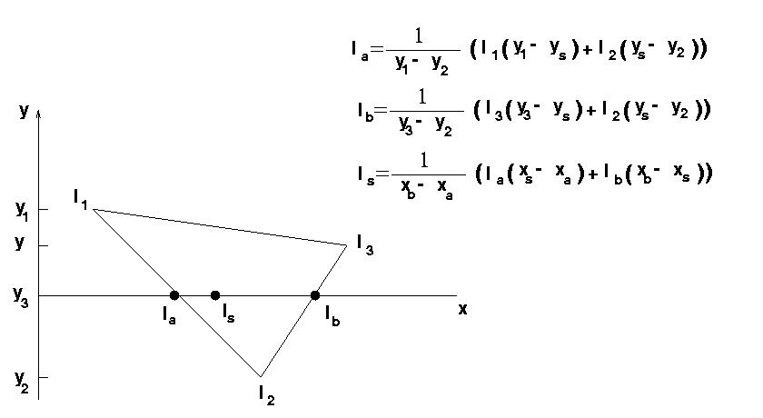

També s'anomena d'interpolació d'intensitat. Es calcula l'equació d'il·luminació per cada vèrtex de la cara (en coordenades d'aplicació) i s'interpola linealment entre elles en temps de rasterització per a calcular el color en un punt (píxel) interior. La figura mostra la tècnica d'interpolació:
|  |
L'avantatge principal és la utilització de càlculs simples que poden realitzar-se incrementalment dins del procés de rasterització de polígons que s'efectua en z-buffer. L'inconvenient principal és que els colors en punts interiors sempre estaran dins de l'intèrval de color dels vèrtexs.
Aquest fet comporta dos efectes indesitjats:
Donat l'efecte contra-produent del colorat de Gouraud en aplicar el model d'il·luminació de Phong, generalment s'utilitza Lambert.